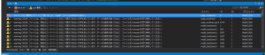
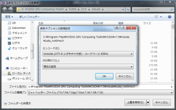

前回はUbuntuからディープラーニングのフレームワークの一つである Caffe をインストールしてテストしました。でもやっぱりWindowsで実行したいよね、ということで別のフレームワークを導入します。 別にLinuxが面倒だから、という理由ではないです。ﾎﾝﾄｳﾀﾞﾖ。
CNTK
Microsoftが公開した、オープンソースで開発が進んでいるディープラーニングのフレームワークです。 CNTK は、公式によれば、Computational Network Toolkitとのこと。 公式ページはGithubです。
環境構築
ソースコード
流石Microsoft、というかバイナリ版も用意していますが、ここはソースコードからビルドします。 公式ページに説明がすべて書かれています。が英語。いや、別に大した英語でもないのでビビる必要はないです。 ただ、注意として、64bitOS限定です。 まずはGitクライアントを使ってCloneします。 私は TortoiseGit を使ってCloneしましたが、お好みでどうぞ。 コマンドなら [code lang=”dos”] git clone https://github.com/Microsoft/CNTK [/code] です。好きなディレクトリでどうぞ。
Visual Studio 2013
バージョン指定があるようです。 Visual Studio 2013 Update 5またはそれ以降、とあります。 Update5以降を指すようですが、現時点ではありません。
CUDA 7.0
NVidiaのサイトから CUDA 7.0 をダウンロードします。 インストールは簡単ですので割愛します。 CUDA 7.5でしたら以前の記事にインストール手順があります。 インストール完了後 CUDA_PATH=C:\Program Files\NVIDIA GPU Computing Toolkit\CUDA\v7.0 CUDA_PATH_V7_0=C:\Program Files\NVIDIA GPU Computing Toolkit\CUDA\v7.0 が環境変数に追加されたことを確認。 インストール先に応じて変わりますのでご注意。 CUDA 7.5でも動く、みたいなことがIssueにあがっています。 7.5をすでにインストールしているので、それを利用します。
NVidia CUB
NVIDIAによれば、CUBは CUDA UnBound とのこと。
CUB provides state-of-the-art, reusable software components for every layer of the CUDA programming model:
[code] 訳:CUBは最新式で、再利用可能なソフトウェアコンポーネントをCUDAプログラミングモデルのすべてのレイヤーに提供します。 [/code] とあります。 最新版は1.5.1ですが、説明ページは1.4.1を案内していますので従います。 ここからです。 入手後、任意のフォルダに展開してパスを通します。 展開したフォルダに移動して、下記のコマンドを実行すればパスが通ります。 [code lang=”dos”] setx CUB_PATH “%CD%” [/code] 下記のような感じになればOK。 [code] CUB_PATH=c:\src\cub-1.4.1 [/code]
NVIDIA CUDA Deep Neural Network library (cuDNN)
これもバージョン指定があります。 ここから入手。 先ほどと同じく、入手後、任意のフォルダに展開してパスを通します。 展開したフォルダに移動して、下記のコマンドを実行すればパスが通ります。 [code lang=”dos”] setx CUDNN_PATH “%CD%” [/code] 下記のような感じになればOK。 [code] CUDNN_PATH=C:\NVIDIA\cudnn-4.0\cuda [/code]
Boost
説明不要の有名ライブラリ群。 ですが、CNTKはユニットテストに使っている模様。 またバージョン指定で、1.59が必要で, Visual Studio 12 (2013) でビルドされたバイナリが必要になります。 Sourceforgeから入手。 入手後、インストールを実行します。 インストール先のフォルダに移動して、下記のコマンドを実行すればパスが通ります。 [code lang=”dos”] setx BOOST_INCLUDE_PATH “%CD%” setx BOOST_LIB_PATH “%CD%\lib64-msvc-12.0” [/code] 下記のような感じになればOK。 [code] BOOST_INCLUDE_PATH=c:\local\boost_1_59_0 BOOST_LIB_PATH=c:\local\boost_1_59_0\lib64-msvc-12.0 [/code]
ACML (またはMKL)
AMD Core Math Libraryです。 対して MKL は Intelの Math Kernel Library です。 Caffe 環境構築の際、BLAS (線形代数ライブラリ) を入手する際のオプションでした。MKLは有償なので、ACMLを使います。 ACMLはAMD websiteから入手します。 たくさんありますが、利用するのは acml5.3.1-ifort64.exe のようなファイルです。 なので、Inter Fortran というのを使います。5.3.1以降を使います。 今回は6.1.0を使います。 先ほどと同じく、入手後、任意のフォルダに展開してパスを通します。 展開したフォルダに移動して、下記のコマンドを実行すればパスが通ります。 [code lang=”dos”] setx ACML_PATH “%CD%/ifort64_mp” [/code] 下記のような感じになればOK。 [code] ACML_PATH=C:\AMD\acml5.3.1\ifort64_mp [/code]
Microsoft MPI
MPI は Message Passing Interface とのこと。 バージョン7以降が必要。 Microsoft Developer Networkから入手。 SDKとランタイムが必要です。それぞれインストーラは、msmpisdk.msi、MSMpiSetup.exe になります。 インストールは簡単なので割愛。
OpenCV
こちらも説明不要なコンピュータビジョン向けライブラリ。 バージョン3.0.0が必要。 ここから入手。 インストール後、環境変数 OPENCV_PATH を設定します。 OpenCVのbuildフォルダにパスを通します。buildフォルダに移動して、下記のコマンドを実行すればパスが通ります。 [code lang=”dos”] setx OPENCV_PATH “%CD%” [/code] 下記のような感じになればOK。 [code] OPENCV_PATH=C:\src\opencv\build [/code]
ビルド (事前準備)
CUDA 7.0をインストールしている場合は、ここはスキップです。 CUDA 7.5を利用する場合は、プロジェクトファイルに記載してある各種参照を7.5用に書き換える必要があります。 書き換え対象は、
- Source\ActionsLib\ActionsLib.vcxproj
- Source\CNTK\CNTK.vcxproj
- Source\ComputationNetworkLib\ComputationNetworkLib.vcxproj
- Source\EvalDll\EvalDll.vcxproj
- Source\Math\Math.vcxproj
- Source\Math\MathCUDA.vcxproj
- Source\SGDLib\SGDLib.vcxproj
- Tests\UnitTests\MathPerformanceTests\MathPerformanceTests.vcxproj
- Tests\UnitTests\MathTests\MathTests.vcxproj
になり、 cu***64_70.dll CUDA 7.0.props CUDA_PATH_V7_0 という単語を書き換えます。 Grepで、 7.0 を 7.5 _70 を _75 _V7_0 を _V7_5 に置換すればOKです。
ビルド
CNTK.sln を Visual Studio 2013 で開きます。 ソリューション構成は Debug、Debug_CpuOnly、Release、Release_CpuOnly の4つです。 お好みの構成でビルドしてください。 ですが、ビルドに失敗します。 下記はRelease_CpuOnlyでビルドした際のスクリーンショットです。 
{kind=link}
とあります。Shift-Jisが不味いのでUTF-8に変換します。 ですので、面倒ですが、下記のファイルのエンコードをUTF8に変換します。
- C:\Program Files (x86)\Microsoft SDKs\MPI\Include\mpi.h
- C:\Program Files\NVIDIA GPU Computing Toolkit\CUDA\v7.5\Include\CUDA_runtime.h
- C:\Program Files\NVIDIA GPU Computing Toolkit\CUDA\v7.5\Include\CUDA_runtime_api.h
- C:\Program Files\NVIDIA GPU Computing Toolkit\CUDA\v7.5\Include\device_double_functions.h
- C:\Program Files\NVIDIA GPU Computing Toolkit\CUDA\v7.5\Include\device_functions.h
- C:\Program Files\NVIDIA GPU Computing Toolkit\CUDA\v7.5\Include\device_functions_decls.h
- C:\Program Files\NVIDIA GPU Computing Toolkit\CUDA\v7.5\Include\math_functions.h
- C:\Program Files\NVIDIA GPU Computing Toolkit\CUDA\v7.5\Include\sm_20_intrinsics.h
- CNTK\Source\Common\Include\Config.h
- opencv\build\Include\opencv2\core\mat.hpp
- opencv\build\Include\opencv2\core\persistence.hpp
- opencv\build\Include\opencv2\core\utility.hpp
メニュー→ファイル→名前をつけて保存で上書き保存のメニューからエンコード付きで保存を選択します。 
{kind=link}
Unicode (UTF-8 シグネチャ付き) - コードページ 65001 で保存してください。 これでビルドが通りますが、GPUを使用するほうは、かなり時間がかかります。 コーヒーでも飲んでてください。 私の環境だと9分かかりました。 また、出力ファイルをRAMディスクに対比しているのですが、2GB以上途中ファイルとバイナリファイルを生成しますので、RAMディスクを活用している方は、空き容量には注意してください。 エラーなく終わると、CNTK\x64\Release\CNTK.exe が生成されます。
Conclusion
Caffe以上に面倒な構築手順でした。 次回は実際に使えたらな、と思います。